Latest Baby Finds
Strong baby picks selected from the Baby page using the 4.9 smart rule.
Binxy Baby Shopping Cart Hammock
A shopping cart hammock designed to support easier grocery trips with infants while keeping the cart more usable.
A quick overview of what shoppers commonly expressed.
- Often liked for grocery-trip convenience
- Useful for parents who shop with infants
- Helps free up cart space compared with bulky setups
- Always follow the product instructions and age guidance
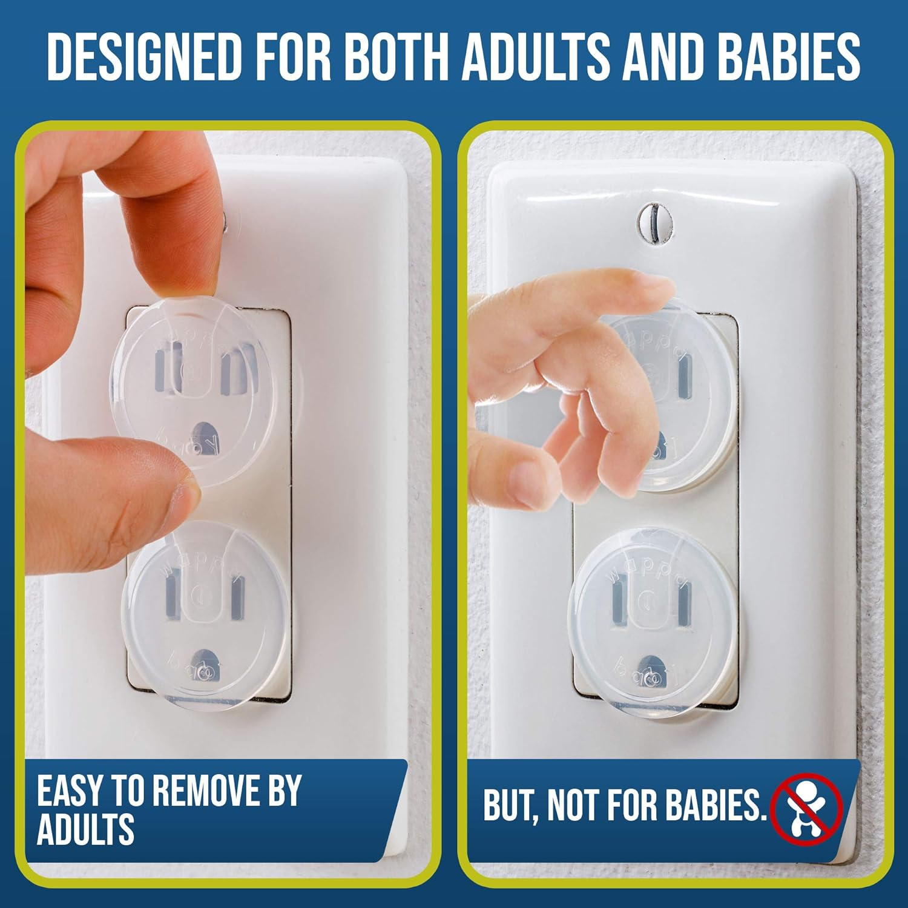
Clear Outlet Covers 50 Pack
A value pack of transparent outlet covers for homes preparing baby and toddler spaces.
A quick overview of what shoppers commonly expressed.
- Often liked for simple home baby-proofing
- Clear style blends into many outlets
- Large pack is useful for multiple rooms
- Best used as one part of a broader safety setup
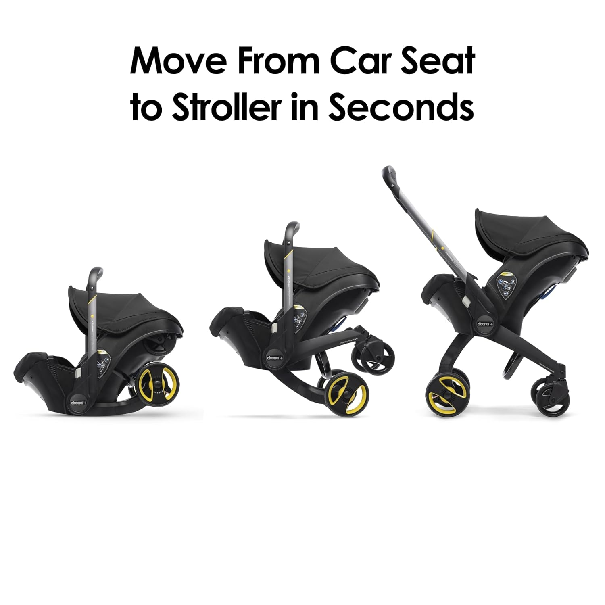
Doona Car Seat & Stroller
An all-in-one infant car seat and stroller travel system made for quicker transitions during outings.
A quick overview of what shoppers commonly expressed.
- Often liked for travel and transition convenience
- Combines stroller and infant seat functionality
- Useful for errands, cars, and compact storage needs
- Parents should confirm fit, age, and installation guidance
Dreambaby Duck Baby Bath Thermometer
A floating duck bath thermometer that displays water temperature for bath-time awareness.
A quick overview of what shoppers commonly expressed.
- Often liked for easy bath temperature checks
- Fun duck design fits bath-time routines
- Can also help check room temperature
- A simple tool for more informed bath prep
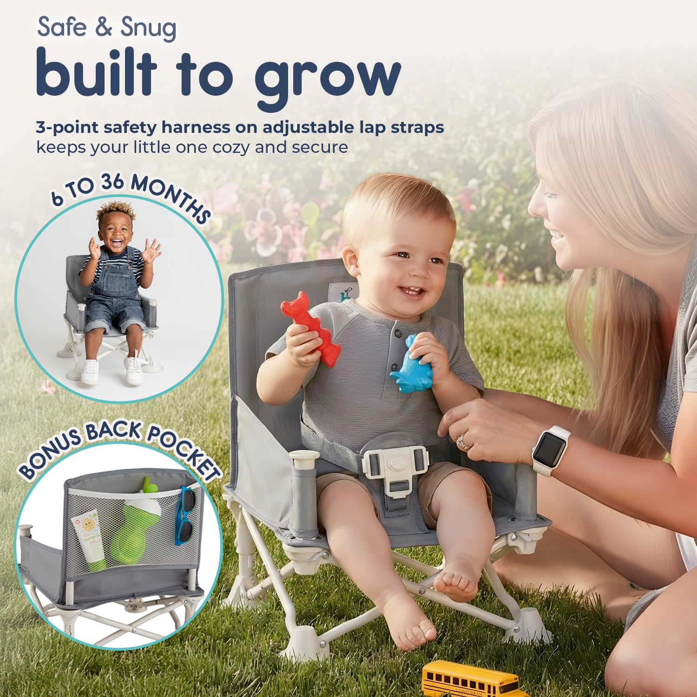
Hiccapop OmniBoost Travel Booster Seat
A portable booster seat with tray for dining, travel, camping, restaurants, and visiting family.
A quick overview of what shoppers commonly expressed.
- Often liked for travel and restaurant use
- Compact fold helps with storage and carrying
- Tray makes feeding away from home easier
- Best used according to the seat and strap instructions
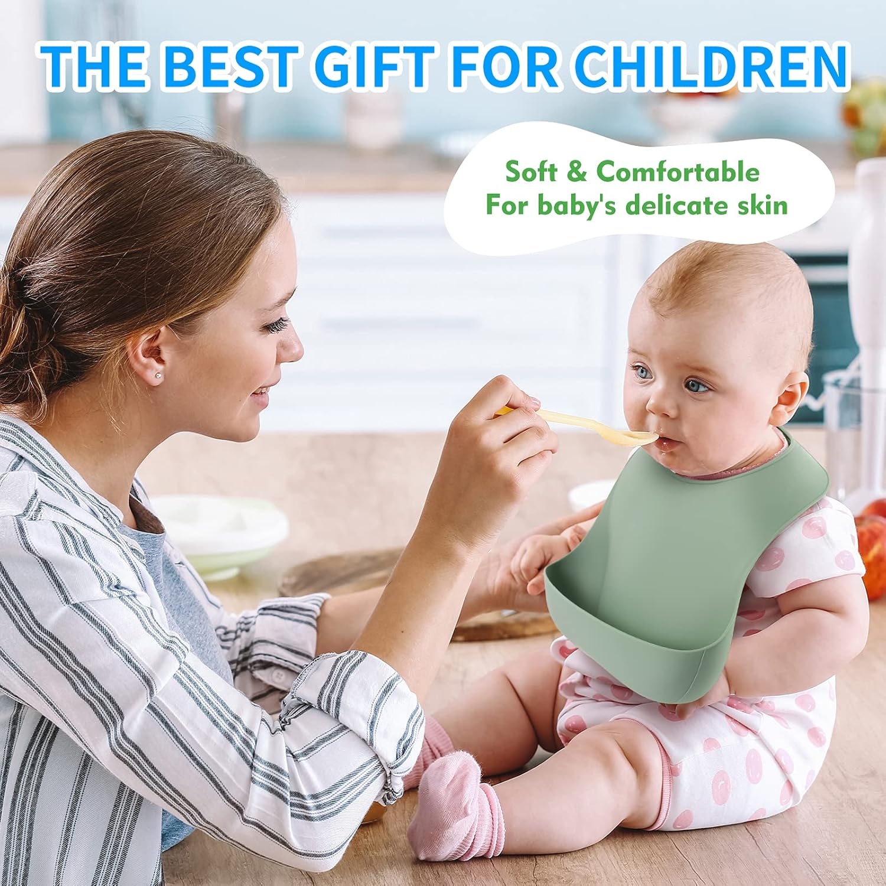
ME.FAN Silicone Baby Bibs
Adjustable silicone baby bibs with a food-catching pocket for everyday meals and snack time.
A quick overview of what shoppers commonly expressed.
- Often liked for easy cleaning after meals
- Pocket helps catch small food spills
- Adjustable fit supports different ages
- Useful everyday pick for feeding routines
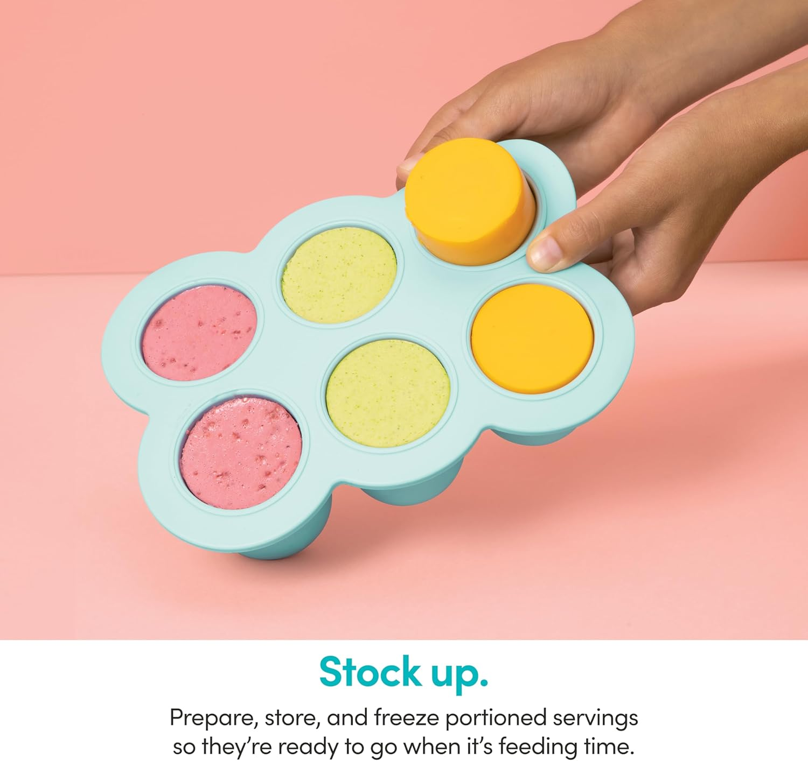
NutriBullet Baby Food-Making System
A baby food-making system for blending and preparing small batches of baby meals at home.
A quick overview of what shoppers commonly expressed.
- Often liked for homemade baby food prep
- Includes useful accessories for small portions
- Good fit for parents who batch-prep meals
- Cleaning and storage needs should be considered
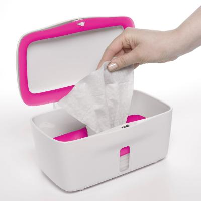
OXO Tot Perfect Pull Wipes Dispenser
A weighted baby wipes dispenser designed to help pull one wipe at a time during diaper changes.
A quick overview of what shoppers commonly expressed.
- Often liked for smoother wipe dispensing
- Weighted plate helps reduce wipe clumps
- Good fit for changing stations and nurseries
- Simple everyday upgrade for diaper routines
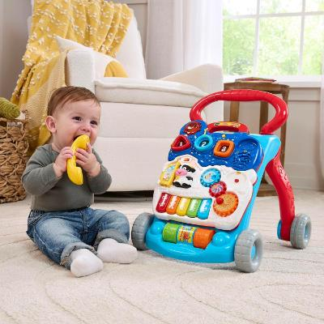
VTech Sit-to-Stand Learning Walker
A baby activity walker with interactive play features for floor play and supported walking stages.
A quick overview of what shoppers commonly expressed.
- Often liked for interactive play features
- Supports sit-down play and walker-style use
- Good gift-friendly baby activity pick
- Use should match the child's stage and supervision needs
WeeSprout Suction Plates
Silicone suction plates with divided sections for babies and toddlers during self-feeding meals.
A quick overview of what shoppers commonly expressed.
- Often liked for toddler self-feeding
- Suction base helps reduce plate sliding
- Divided design supports simple meal portions
- Good daily feeding pick for babies and toddlers

GROWNSY Electric Baby Nasal Aspirator
An electric nasal aspirator designed to help parents clear baby congestion more easily during colds, allergies, or stuffy-nose days.
A quick overview of what shoppers commonly expressed.
- Often liked for suction performance and simple use
- Helpful for congestion and stuffy-nose care
- Useful during everyday baby-care routines
- Some buyers may want to check durability expectations
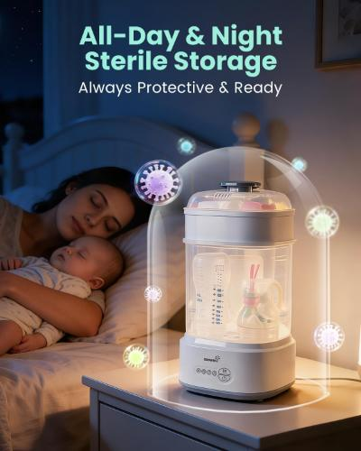
GROWNSY Bottle Sterilizer and Dryer
A compact electric steam bottle sterilizer and dryer for baby bottles, pacifiers, and feeding accessories.
A quick overview of what shoppers commonly expressed.
- Often liked for bottle-care convenience
- Drying function helps complete the routine faster
- Compact setup fits many kitchens and counters
- Useful for parents managing daily bottle cleaning
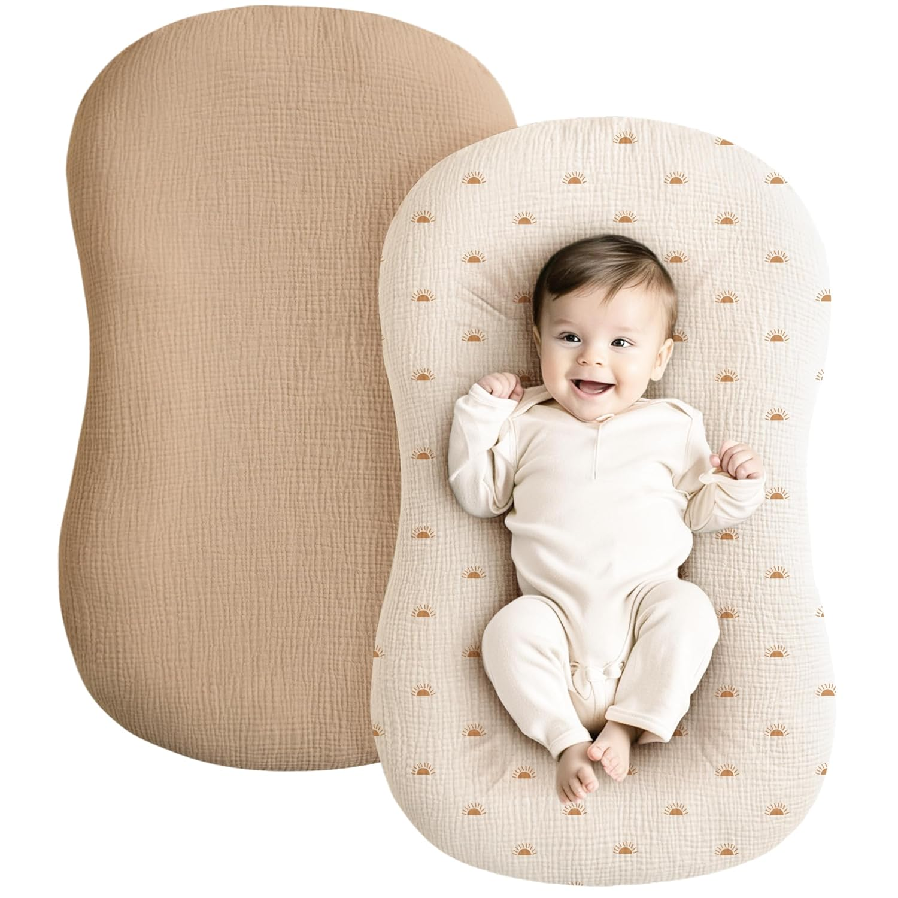
Konssy Muslin Baby Lounger Cover
A soft muslin baby lounger cover set made for breathable-feeling replacement covers and easy nursery refreshes.
A quick overview of what shoppers commonly expressed.
- Often liked for soft muslin fabric feel
- Useful as extra replacement covers
- Good fit for nursery setups and laundry rotation
- Cover fit should be checked before buying
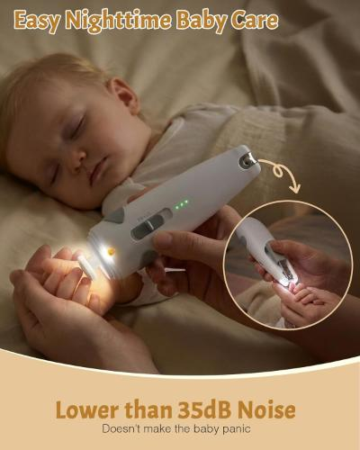
Lictin Baby Healthcare & Grooming Kit
A rechargeable baby grooming kit with nail trimming and care tools for home baby-care routines.
A quick overview of what shoppers commonly expressed.
- Often liked for having many care tools in one kit
- Rechargeable nail trimmer adds convenience
- Useful for baby grooming and nursery organization
- Best used gently and with age-appropriate attachments
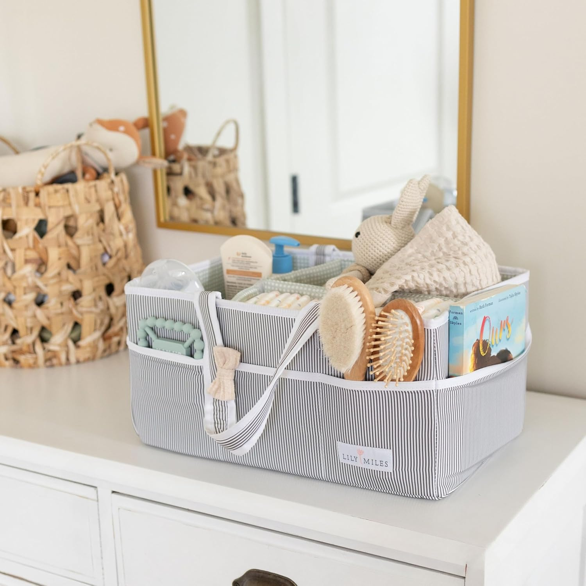
Lily Miles Baby Diaper Caddy Organizer
A large diaper caddy tote for diapers, wipes, creams, small toys, and newborn essentials.
A quick overview of what shoppers commonly expressed.
- Often liked for organizing diaper essentials
- Portable tote design helps move supplies room to room
- Useful for nurseries, changing stations, and travel
- Good baby shower style product
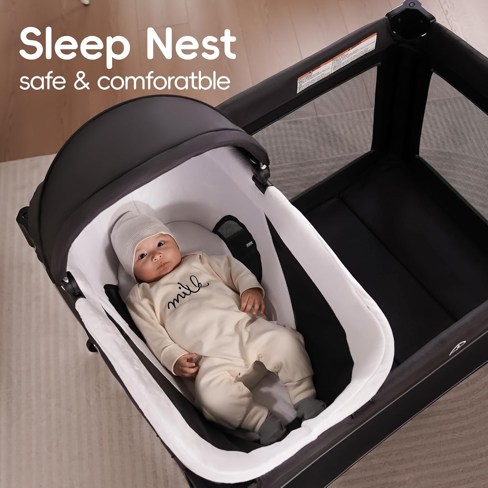
Pamo Babe 4-in-1 Playard
A portable baby playard with bassinet, changing table, mesh sides, and travel-friendly nursery use.
A quick overview of what shoppers commonly expressed.
- Often liked for multi-function baby setup
- Portable design helps with travel and room changes
- Mesh sides support visibility
- Parents should follow all setup and sleep-use guidance
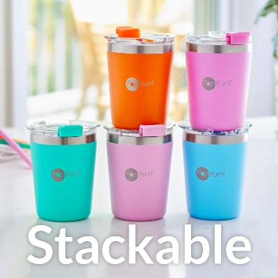
PopYum Insulated Kids Cups
Insulated stainless kids cups with lids and straws for toddlers, daycare, outings, and everyday drinks.
A quick overview of what shoppers commonly expressed.
- Often liked for toddler drink routines
- Insulated stainless design helps keep drinks cooler
- Stackable format is storage friendly
- Good fit for daycare, travel, and home use